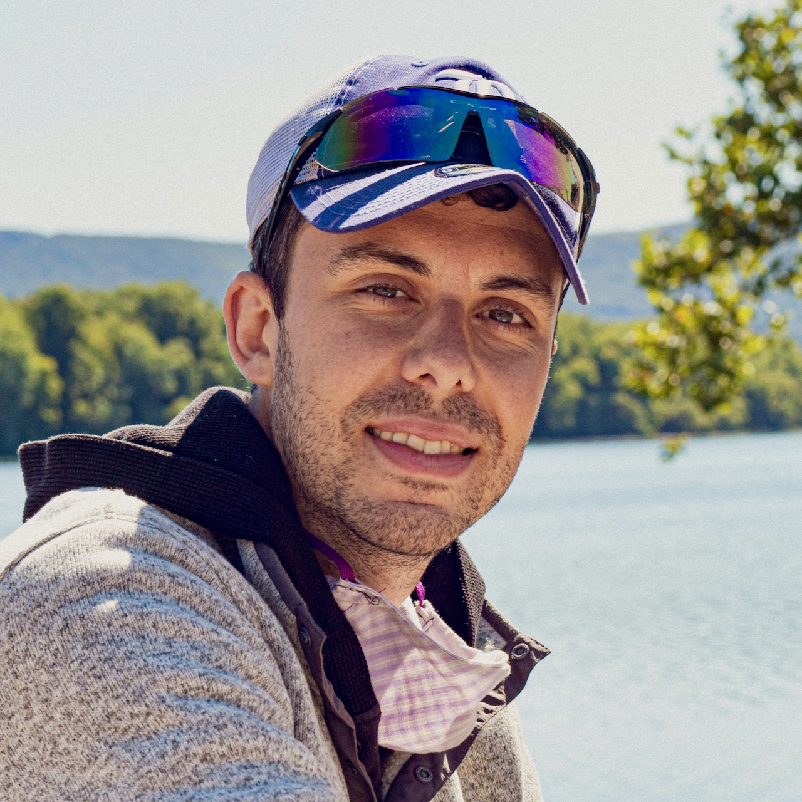

James Doss-Gollin
Assistant Professor | Civil & Environmental Engineering | Rice University
Hello! I’m an assistant professor in the Department of Civil and Environmental Engineering at Rice University.
Short Bio
James Doss-Gollin is an Assistant Professor in the Department of Civil and Environmental Engineering at Rice University. His research integrates earth science, probabilistic methods, machine learning, and systems analysis to help communities and infrastructure systems manage evolving climate risks. Current projects include graph neural networks for flood emulation, flood resilience planning with rural Texas communities, and updated rainfall frequency estimates for the State of Texas. He leads the Cluster for AI for Climate Risk and Urban Resilience at the Ken Kennedy Institute and is a member of the Consortium for Enhancing Resilience and Catastrophe Modeling (CERCat). Before joining Rice, James was a postdoctoral researcher at Pennsylvania State University; he earned his PhD from Columbia University and his BS from Yale University.
Longer Bio
I grew up in New Haven, CT, surrounded by the challenges and possibilities of aging urban infrastructure. My interests in renewable energy motivated me to study mechanical engineering at Yale, but projects with EWB-Yale, Fundación Paraguaya, and UFC Pós-DEHA on rural water security sparked my interest in climate risk and infrastructure resilience.
I earned my MS and PhD at Columbia as part of the Columbia Water Center, advised by Upmanu Lall, building data-driven models of rainfall and climate hazards. As a postdoc at Penn State’s Earth and Environmental Systems Institute with Klaus Keller, I worked on decision-support tools for communities managing flood risks.
I joined Rice in 2021. Houston is a wonderful testbed for this work — massive port, rapid sea level rise, sprawling city, strained grid, chronic flooding. My group uses AI and statistics to better understand climate risks, particularly flooding and rainfall, and to inform adaptation decisions. At Rice, I lead the Cluster for AI for Climate Risk and Urban Resilience at the Ken Kennedy Institute and am affiliated with the SSPEED Center and the Consortium for Enhancing Resilience and Catastrophe Modeling (CERCat). I teach courses on climate risk management and data science for hydroclimate hazard assessment.
I’m a proud alum of Wilbur Cross and a New Haven Promise scholar, and will staunchly defend the superiority of apizza. Outside of work, I enjoy playing and watching soccer (Forza Roma! Dale Albirroja!) and exploring Houston’s food and playgrounds with my family.
¡Hola! Soy profesor asistente en el Departamento de Ingeniería Civil y Ambiental de Rice University.
Crecí en New Haven, CT, rodeado de los desafíos y las posibilidades de una infraestructura urbana envejecida. Mi interés en las energías renovables me motivó a estudiar ingeniería mecánica en Yale, pero proyectos con EWB-Yale, Fundación Paraguaya y UFC Pós-DEHA sobre seguridad hídrica rural despertaron mi interés en el riesgo climático y la resiliencia de infraestructura.
Obtuve mi maestría y doctorado en Columbia como parte del Columbia Water Center, bajo la dirección de Upmanu Lall, modelando la precipitación y los riesgos climáticos. Como postdoc en el Earth and Environmental Systems Institute de Penn State con Klaus Keller, trabajé con comunidades que gestionan riesgos de inundación.
Me incorporé a Rice en 2021. Houston es un laboratorio fascinante para este trabajo: puerto enorme, aumento rápido del nivel del mar, ciudad en expansión, red eléctrica bajo presión, inundaciones crónicas. Mi grupo utiliza IA y estadística para comprender mejor los riesgos climáticos, particularmente las inundaciones y la precipitación, e informar decisiones de adaptación. En Rice, lidero el Cluster de IA para Riesgo Climático y Resiliencia Urbana en el Ken Kennedy Institute y estoy afiliado al Centro SSPEED y al Consorcio para Mejorar la Resiliencia y Modelado de Catástrofes (CERCat). Imparto cursos sobre gestión del riesgo climático y ciencia de datos para la evaluación de riesgos hidroclimáticos.
Soy un orgulloso exalumno de Wilbur Cross y becario de New Haven Promise, y defenderé firmemente la superioridad de la apizza. Fuera del trabajo, disfruto jugar y ver fútbol (¡Forza Roma! ¡Dale Albirroja!) y explorar la gastronomía y los parques de Houston con mi familia.
Olá! Sou professor assistente no Departamento de Engenharia Civil e Ambiental da Rice University.
Cresci em New Haven, CT, cercado pelos desafios e possibilidades de uma infraestrutura urbana envelhecida. Meu interesse em energias renováveis me levou a estudar engenharia mecânica em Yale, mas projetos com EWB-Yale, Fundación Paraguaya e UFC Pós-DEHA sobre segurança hídrica rural despertaram meu interesse em risco climático e resiliência de infraestrutura.
Obtive meu mestrado e doutorado na Columbia como parte do Columbia Water Center, orientado por Upmanu Lall, modelando a precipitação e os riscos climáticos. Como pós-doc no Earth and Environmental Systems Institute da Penn State com Klaus Keller, trabalhei com comunidades que gerenciam riscos de inundação.
Ingressei na Rice em 2021. Houston é um laboratório fascinante para esse trabalho: porto enorme, elevação rápida do nível do mar, cidade em expansão, rede elétrica sob pressão, inundações crônicas. Meu grupo utiliza IA e estatística para compreender melhor os riscos climáticos, particularmente inundações e precipitação, e informar decisões de adaptação. Na Rice, lidero o Cluster de IA para Risco Climático e Resiliência Urbana no Ken Kennedy Institute e sou afiliado ao SSPEED Center e ao Consórcio para Fortalecimento da Resiliência e Modelagem de Catástrofes (CERCat). Leciono cursos sobre gestão de risco climático e ciência de dados para avaliação de riscos hidroclimáticos.
Sou um ex-aluno orgulhoso da Wilbur Cross e bolsista do New Haven Promise, e defenderei firmemente a superioridade da apizza. Fora do trabalho, gosto de jogar e assistir futebol (Forza Roma! Dale Albirroja! Vai Canarinho!) e explorar a gastronomia e os parquinhos de Houston com minha família.